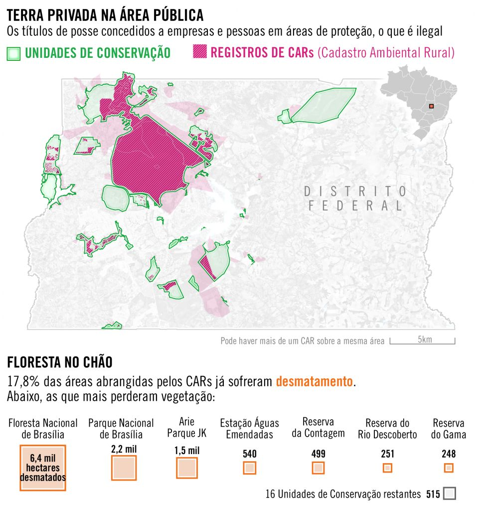
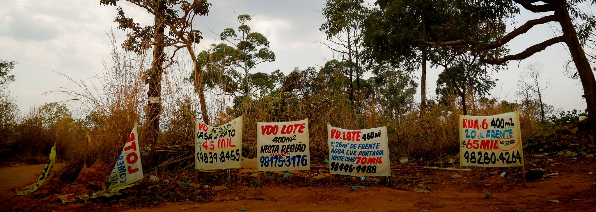
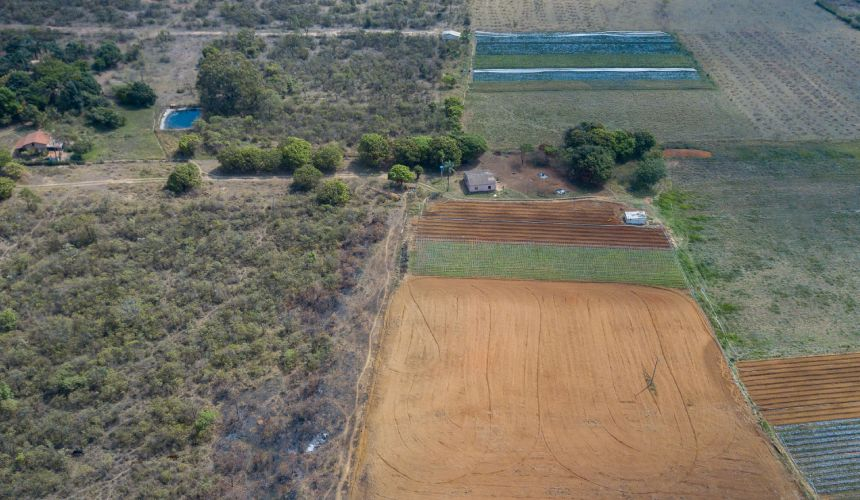

Numa rua de terra batida, acumulam-se anúncios de venda de terrenos. As placas, enfileiradas no acostamento, quase somem debaixo da poeira levantada pelos carros. Para onde se olhe, há uma parede de tijolos sendo erguida. Na Colônia Agrícola 26 de Setembro, nada movimenta tanto dinheiro quanto a construção civil. A demanda é tanta que há cinquenta lojas de materiais de construção no bairro.
On an unpaved street, signs announcing land sales accumulate. The signs, lined up on the roadside, are almost buried under dust from passing cars. Wherever you look, a wall of bricks is being built. In the 26 September Agricultural Colony, nothing generates as much money as the construction trade. The demand is so great that there are fifty building material stores in the neighborhood.
O assentamento fica no Distrito Federal, a 26 km do Palácio do Planalto, e recebe novos moradores a cada dia. Hoje, a população dali é estimada em 35 mil pessoas. A maioria delas vive em casas simples, construídas em ruas sem asfalto, sem saneamento e sem presença do poder público. Não há escolas ou postos de saúde. Quase ninguém paga por energia elétrica – só duzentas pessoas, estima a associação de moradores, o que equivale a menos de 1% da população local.
The settlement is in the Federal District, 26 km from the Palácio do Planalto, and receives new residents daily. Today, its population is estimated at 35,000 people. Most live in simple houses built on unpaved streets with no sanitation and no government presence. There are no schools or health posts. Almost nobody pays for electricity—only about 200 people, according to the residents' association, which is less than 1% of the local population.
O bairro tem essas características porque é ilegal. Foi quase todo construído em terras públicas, numa área de conservação onde deveria haver uma floresta preservada. Nenhum imóvel tem certidão registrada em cartório. Do ponto de vista da lei, todos os que se dizem proprietários de terras naquele bairro são grileiros.
The neighborhood has these characteristics because it's illegal. It was almost entirely built on public lands, in a conservation area where a preserved forest should exist. No property has a deed registered with a notary. From a legal perspective, everyone claiming to own land in that neighborhood is a land grabber.

A invasão de terras no coração de Brasília
Land invasion in the heart of Brasília
O problema se arrasta há mais de vinte anos. Nos anos 1990, quando as primeiras chácaras apareceram na região, o governo federal criou a Floresta Nacional de Brasília (Flona), uma área de preservação ambiental de 9 mil hectares que incluía a área atualmente ocupada pelo assentamento. O plano era transferir os moradores dali para outro lugar, já que não é permitida a ocupação humana em unidades de conservação. A desocupação, porém, nunca aconteceu. Com o tempo, invasores foram se apossando daquelas terras, construindo casas, comércio e chácaras.
The problem has been dragging on for over twenty years. In the 1990s, when the first properties appeared in the region, the federal government created the Brasília National Forest (Flona), a 9,000-hectare conservation area that included the area currently occupied by the settlement. The plan was to relocate residents elsewhere, since human occupation is not permitted in conservation units. However, the eviction never happened. Over time, invaders took possession of these lands, building houses, businesses, and properties.
Casos com esse se repetem em diferentes partes do Distrito Federal, ameaçando a flora nativa da capital do país. Levantamento inédito da piauí em parceria com o projeto Data Fixers mostra que ao menos 1.026 pessoas físicas ou jurídicas declararam ao governo federal, por meio do Cadastro Ambiental Rural (CAR), serem donas de terras em unidades de conservação do DF. Somados, esses cadastros totalizam 69 mil hectares, o equivalente a 90% da área de preservação existente.
Cases like this repeat in different parts of the Federal District, threatening the native flora of the country's capital. An unprecedented survey by piauí in partnership with the Data Fixers project shows that at least 1,026 individuals or legal entities declared to the federal government, through the Rural Environmental Registry (CAR), to own land in conservation units in the DF. Combined, these registries total 69,000 hectares, equivalent to 90% of existing preserved areas.
No Parque Nacional de Brasília, um destino turístico conhecido por suas cachoeiras e piscinas naturais, mas que também abriga espécies ameaçadas de extinção, como o gato-maracajá e o tamanduá-bandeira, duas pessoas registraram cada uma um CAR dizendo ter posse de mais da metade da área do parque – uma ilegalidade.
In Brasília National Park, a tourist destination known for its waterfalls and natural pools, but which also harbors species threatened with extinction, such as the ocelot and giant anteater, two people each registered a CAR claiming to possess more than half the park's area—an illegality.

O sistema fraudulento do car
The fraudulent car system
Os CARs são autodeclaratórios. Esse mecanismo foi criado pelo governo federal, em 2012, para facilitar a fiscalização de propriedades rurais. A intenção era monitorar se os proprietários estavam respeitando as áreas de preservação ambiental, mas a ideia logo foi subvertida: no Cerrado, assim como na Amazônia, grileiros passaram a usar o cadastro rural para legitimar a posse de terras em áreas ilegais. O registro dá um verniz legal ao que não é.
CARs are self-declared. This mechanism was created by the federal government in 2012 to facilitate the monitoring of rural properties. The intention was to monitor whether owners were respecting environmental preservation areas, but the idea was quickly subverted: in the Cerrado, just as in the Amazon, land grabbers began using the rural registry to legitimize possession of land in illegal areas. The registration gives legal veneer to what is not legal.
Em geral, depois de obter um CAR numa área protegida pelo poder público, grileiros solicitam um registro do Incra – o Instituto Nacional de Colonização e Reforma Agrária – e aguardam uma futura desafetação da unidade de conservação. Caso a área um dia deixe de ser preservada, eles poderão reivindicar a posse da terra.
Generally, after obtaining a CAR in an area protected by the government, land grabbers request a registration from Incra—the National Institute for Land Colonization and Agrarian Reform—and await a future removal of the conservation unit's designation. If the area ever ceases to be preserved, they can claim land possession.
A diferença entre a grilagem na Amazônia e no Distrito Federal é que, neste último, o objetivo do grileiro não é transformar a área numa propriedade rural particular, mas criar loteamentos urbanos, que lhe permitam lucrar com a venda de terrenos. As placas anunciando a venda de imóveis na Colônia 26 de Setembro, por valores que variam entre 55 mil e 105 mil reais, atestam o sucesso do modelo criminoso. A prosperidade é tanta que o esquema entrou no radar de traficantes e milicianos.
The difference between land grabbing in the Amazon and the Federal District is that in the latter, the land grabber's goal is not to transform the area into a private rural property, but to create urban subdivisions that allow him to profit from land sales. Signs advertising property sales in the 26 September Colony, at prices ranging from 55,000 to 105,000 reais, attest to the success of the criminal scheme. The prosperity is such that the scheme has come to the attention of traffickers and militias.
Grileiros com apoio político
Land grabbers with political backing
Quando a Secretaria de Proteção da Ordem Urbanística do Distrito Federal tenta barrar novas construções na Colônia 26 de Setembro, os moradores costumam apelar para Francisco Joélio Rodrigues da Silva, o Miguel da 26. Cinegrafista de uma empresa que presta serviços para o Senado, ele vive no bairro há catorze anos e preside a associação dos moradores. No ano passado, se lançou candidato a deputado distrital pelo PSDB, mas teve apenas 4.252 votos e não se elegeu.
When the Federal District's Department of Urban Order Protection tries to prevent new construction in the 26 September Colony, residents usually appeal to Francisco Joélio Rodrigues da Silva, known as "Miguel da 26." A cameraman for a company that provides services to the Senate, he has lived in the neighborhood for fourteen years and presides over the residents' association. Last year, he ran as a candidate for district deputy for the PSDB, but received only 4,252 votes and was not elected.
Um processo na Justiça indica que o próprio Miguel atua na venda de lotes. Lu Tong Lin, um chinês radicado no Distrito Federal, diz ter vendido a ele uma chácara na Colônia 26 de Setembro, que Miguel posteriormente dividiu em lotes e revendeu a terceiros. Depois de um desentendimento entre ambos, porém, Lin entrou na Justiça para tentar reaver o imóvel. No processo, Miguel foi acusado de ameaçar de morte um vizinho que iria testemunhar a favor de Lin. Os pedidos de Lin, no entanto, acabaram rejeitados. A juíza entendeu que tanto ele quanto Miguel tinham cometido crime ao dividir e comercializar terras dentro de uma unidade de conservação.
A legal case indicates that Miguel himself acts in land sales. Lu Tong Lin, a Chinese resident of the Federal District, claims he sold him a property in the 26 September Colony, which Miguel later divided into lots and resold to others. After a disagreement between them, however, Lin went to court to try to recover the property. In the case, Miguel was accused of threatening to kill a neighbor who would testify in Lin's favor. Lin's requests, however, were ultimately rejected. The judge concluded that both he and Miguel had committed crimes by dividing and commercializing land within a conservation unit.
Miguel tem apoio de políticos poderosos. Frequenta o senador Izalci Lucas (PSDB), que disputou o governo distrital, e com a ex-ministra da Secretaria de Governo Flávia Arruda, que se lançou ao Senado pelo PL. Os três fizeram carreatas juntos na Colônia 26 de Setembro. Em busca de votos, prometiam a desafetação do assentamento – isto é, defendiam mudar a lei para que aquela área deixasse de ser uma unidade de preservação ambiental, legalizando, com isso, sua ocupação.
Miguel has the support of powerful politicians. He frequents senator Izalci Lucas (PSDB), who ran for district governor, and former Government Secretary Minister Flávia Arruda, who ran for the Senate for the PL. The three held rallies together in the 26 September Colony. Seeking votes, they promised the removal of the settlement's conservation designation—that is, they advocated changing the law so that the area would no longer be an environmental preservation unit, thereby legalizing its occupation.

Milícia e crime organizado
Militia and organized crime
Em áreas griladas densamente povoadas, como a Colônia 26 de Setembro e a Sol Nascente, a posse dos imóveis é, muitas vezes, garantida à força. Grileiros com maior capacidade financeira contratam milícias formadas por policiais civis e militares para proteger seus lotes e, em alguns casos, tomar áreas de terceiros.
In densely populated grabbed areas, such as the 26 September Colony and Sol Nascente, property possession is often guaranteed by force. Land grabbers with greater financial capacity hire militias formed by civil and military police to protect their lots and, in some cases, seize areas belonging to others.
Uma investigação da Polícia Civil mostra que casos assim acontecem ao menos desde 2000. Naquele ano, o então delegado Francisco de Assis Barreiro Crizanto e sua equipe foram contratados como seguranças a serviço de grileiros do condomínio Privê, no Lago Norte, em Brasília. Meses depois, expulsaram um dos moradores do condomínio, derrubando a cerca que delimitava o terreno de seu imóvel. Segundo os investigadores, o delegado esperava receber, como forma de compensação por esse ato de violência, alguns lotes do condomínio. Depois os venderia para injetar dinheiro em sua campanha a deputado distrital, em 2002.
A Civil Police investigation shows that such cases have been happening at least since 2000. That year, then-delegate Francisco de Assis Barreiro Crizanto and his team were hired as security for land grabbers in the Privê condominium in Lago Norte, Brasília. Months later, they expelled one of the condominium residents by tearing down the fence that marked his property's boundary. According to investigators, the delegate expected to receive, as compensation for this violent act, some lots from the condominium. He would later sell them to inject money into his campaign for district deputy in 2002.
A Polícia Civil investiga, hoje, a atuação de organizações criminosas na Colônia 26 de Setembro. Em agosto de 2020, um policial civil foi baleado e dois PMs ficaram feridos durante uma operação para derrubada de imóveis irregulares no bairro. A Secretaria de Proteção da Ordem Urbanística do Distrito Federal suspeita da ação de milicianos.
The Civil Police today investigate the activities of criminal organizations in the 26 September Colony. In August 2020, a civil police officer was shot and two military police were injured during an operation to demolish irregular properties in the neighborhood. The Federal District's Department of Urban Order Protection suspects militia involvement.

A história de Brasília e a grilagem de terras
Brasília's history and land grabbing
A ocupação ilegal de terras é uma marca de nascença do Distrito Federal. A primeira Constituição republicana, de 1891, previa que a capital deveria ser transferida do Rio para o interior do país. No começo dos anos 1950, com Getúlio Vargas, o governo definiu a localização de Brasília: ficaria no Planalto Central, uma área elevada no meio de três grandes bacias hidrográficas – as dos rios Amazonas, São Francisco e Paraná. Coube a Juscelino Kubitschek tirar a ideia do papel.
Illegal land occupation is a defining characteristic of the Federal District. The first Republican Constitution, of 1891, provided that the capital should be moved from Rio to the interior of the country. In the early 1950s, under Getúlio Vargas, the government defined Brasília's location: it would be on the Central Plateau, an elevated area in the middle of three major river basins—those of the Amazon, São Francisco, and Paraná rivers. It fell to Juscelino Kubitschek to implement the idea.
A ideia era desapropiar toda a área do Distrito Federal, cerca de 14 mil km² na época, por meio da Novacap – a Companhia Urbanizadora da Nova Capital do Brasil. Mas o plano não foi adiante, primeiro porque já existiam duas cidades no local (Planaltina e Brazlândia), segundo porque, graças à especulação imobiliária, as terras tinham encarecido muito desde que a nova capital fora anunciada. No fim das contas, o governo desapropriou só a área onde está situado o plano piloto de Brasília.
The idea was to expropriate the entire Federal District area, about 14,000 km² at the time, through Novacap—the Urban Development Company of Brazil's New Capital. But the plan didn't go forward, first because two cities already existed on the site (Planaltina and Brazlândia), and second because, due to real estate speculation, the land had become much more expensive since the new capital was announced. In the end, the government only expropriated the area where Brasília's pilot plan is located.
A primeira invasão de terras ocorreu ainda durante a construção da capital. Migrantes nordestinos que trabalhavam nos canteiros de obras, mas não tinham onde ficar, ocuparam a fazenda Taguatinga, recém-desapropriada pelo governo federal. Por ser uma área pública, não poderia ser ocupada, mas foi. Dois anos depois de ser criada, Taguatinga somava 26 mil habitantes. Hoje é uma das principais cidades-satélite do Distrito Federal, com mais de 200 mil moradores.
The first land invasion occurred during the construction of the capital itself. Northeastern migrants who worked on construction sites but had nowhere to stay occupied the Taguatinga farm, recently expropriated by the federal government. Being public land, it couldn't be occupied, but it was. Two years after its creation, Taguatinga had 26,000 inhabitants. Today it is one of the main satellite cities of the Federal District, with over 200,000 residents.
O crescimento desordenado do Distrito Federal continua gerando preocupações. De acordo com o professor do departamento de engenharia civil e ambiental da UnB Sergio Koide, o lago Descoberto, responsável por 60% do abastecimento de água do Distrito Federal, tem perdido nascentes devido à expansão desordenada da Sol Nascente, a maior favela brasileira, situada a Oeste de Brasília, com 93 mil habitantes. O quadro, explica Koide, deve se agravar com a ocupação de uma área de 996 hectares ao Norte do lago que pertencia à Floresta Nacional de Brasília, mas que deixou de ser área de preservação por causa do projeto de Flávia Arruda.
The disorderly growth of the Federal District continues to generate concerns. According to Sergio Koide, a professor in the civil and environmental engineering department at UnB, Lake Descoberto, responsible for 60% of the Federal District's water supply, has been losing water sources due to the disorderly expansion of Sol Nascente, Brazil's largest slum, located west of Brasília, with 93,000 residents. The situation, Koide explains, should worsen with the occupation of a 996-hectare area north of the lake that belonged to Brasília National Forest but ceased to be a preservation area due to Flávia Arruda's project.